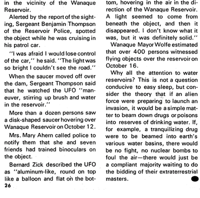
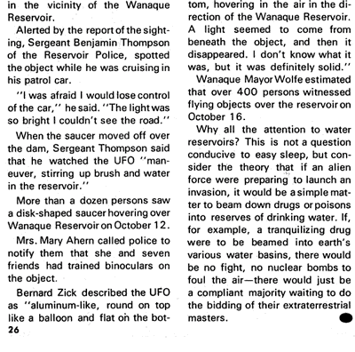

Varied flying saucer activity has been observed in and near Wanaque, New Jersey, especially over the Wanaque Reservoir. Many researchers have long expressed concern over the saucers' interest in earth's water supplies, and it has been suggested that the UFOs may in some way be tampering with Wanaque's six-mile-long reservoir, which is New Jersey's largest storage basin.
One of the first sightings was made by Patrolman George Dykman on 1966-01-11.
"There was a large, bright, white object over the north end of the dam,
" Patrolman Dykman said. "It moved
like one of those low-flying private planes . . . that go over the reservoir once in a while, it looked about that
high. There was no sound to it . . . It seemed to be above the dam and then it moved west, below the top of the sam in
my line of sight
."
Patrolman Dykman alerted other reservoir policemen, and they watched the UFO move over the dam in a circular motion, then hover over the reservoir for several minutes. Later, as they watched, the object dipped down low over the reservoir and cast a reflection on the ice. The next morning investigating officers found a circular hole that had melted in the ice at the corresponding spot.
Reservoir custodian Fred Steines said that the object was like a small moon with a reddish glow. "It was above the water and then it dropped down and went to the left and to the right."
Bentley Spencer is the Civilian Defense Director of Wanaque. He heard of the sighting over the police monitor and rushed out to join the reservoir police.
"It was a big ball of light," Spencer remembered later. "It was reddish on the inside, bluish on the outside. It was hovering, dancing, and dipping across the reservoir. It was moving from right to left, swinging like a pendulum. It cast a bright reflection on the ice."
In the nights that followed, dozens of sightings were made by reservoir police; by Wanaque's mayor, Harry T. Wolfe; by Councilmen Arthur Barton, Warren Hagstrom, John Shutte, and by hundreds of curious tourists.
Basil Wallack, a research engineer, was driving home from work when he sighted a large, bright-blue UFO which seemed to be perched slightly above a telephone wire. Wallack was so startled by the confrontation that he nearly drove off the road.
Sergeant David Cisco of the Wanaque Police Department described the object he saw as "about the size of nine or ten stars clumbed together." Sergeant Cisco's chief concern is that the UFOs may be either draining water from the reservoir or tampering with it in some way.
On March 10th, the mother superior of Mt. Saint Francis Convent in nearby Ringwood, New Jersey, had a close sighting of a saucer.
The mysterious objects maintained intermittent visitations during the summer months, and then, in October, returned for a real "flap."

 

On October 10th, Mrs. Robert J. Gordon, wife of a Pompton Lakes, New Jersey, police sergeant, saw a "disk-shaped object about the size of an automobile" pass over her house and disappear in the vicinity of the Wanaque Reservoir.
Alerted by the report of the sighting, Sergeant Benjamin Thompson of the Reservoir Police, spotted the object while he was cruising in his patrol car.
"I was afraid I would lose control of the car," he said. "The light was so bright I couldn't see the road."
When the saucer moved off over the sam, Sergeant Thompson said that he watched the UFO "maneuver, strirring up brush and water in the reservoir."
More than a dozen persons saw a disk-shaped saucer hovering over Wanaque Reservoir on October 12.
Mrs. Mary Ahem called police to notify them that she and seven friends had trained binoculars on the object.
Bernard Zick described the UFO as "aluminium-like, round on top like a balloon and flat on the bottom, hovering in the air in the direction of the Wanaque Reservoir. A light seemed to come from beneath the object, and then it disappeared. I don't know what it was, but it was definitely solid."
Wanaque Mayor Wolfe estimated that over 400 persons witnessed flying objects over the reservoir on October 16.
Why all the attention to water reservoirs? This is not a question conducive to easy sleep, but consider the theory that if an alien force were preparing to launch an invasion, it would be a simple matter to beam down drugs or poisons into reserves of drinking water. If, for example, a tranquilizing drug were to be beamed into earth's various water basins, there would be no fight, no nuclear bombs to foul the air—there would just be a compliant majority waiting to do the bidding of the extraterrestrial masters.